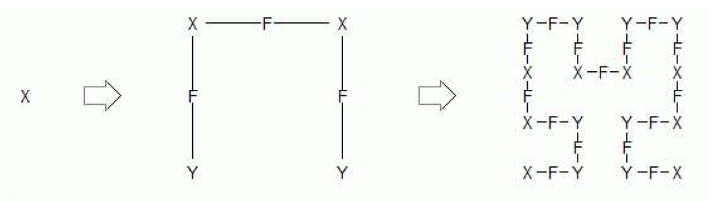

Info zum Lindenmayer-System bei Hilbert- und Peanokurven
Hilbert- und Peanokurven können durch ein Lindenmayer-System (L-System) beschrieben werden.
F: Vorwärtsbewegung mit Zeichnen
L: Richtungsänderung nach links um α = 90°
R: Richtungsänderung nach rechts um α = 90°
Die Beschreibung der Hilbertkurve erfolgt gemäss:
initiator = "X" (Ordnung 1)
generatorX = "LYFRXFXRFYL"
generatorY = "RXFLYFYLFXR"
Die Zeichen X und Y steuern den Ersetzungsvorgang in den Ecken der Kurve bei der Rekursion.
Erste und zweite Ordnung des L-Systems mit dazugehöriger Hilbertkurve:

Sinngemäss erfolgt die Beschreibung und Konstruktion der Peanokurve.